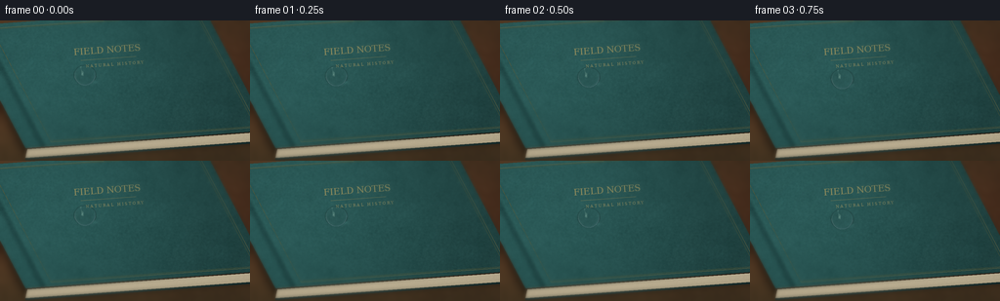
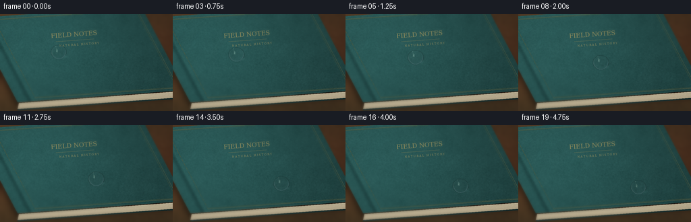
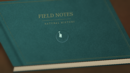

CODING AGENTS AS PIXEL WORLD MODELS
traex/GPT-6.1-Sol · phygen_040
点击播放 · 原生 RGB 像素
逐轮保存的候选
回放视频、检查图与代码变化。
每份候选均可单独播放。实际图片检查记录在下方工具轨迹中。
候选 01播放与检查图
点击播放 · 原生 RGB 像素


展开代码变化
--- 上一保存版本
+++ 本次保存版本
@@ -0,0 +1,158 @@
+from pathlib import Path
+import json
+import numpy as np
+from PIL import Image, ImageDraw, ImageFont, ImageFilter
+from scipy.ndimage import gaussian_filter, map_coordinates
+from scipy.spatial import cKDTree
+import artifact_io
+
+ROOT=Path(__file__).resolve().parent
+SPEC=json.loads((ROOT/'task_spec.json').read_text())
+S=3
+W,H=SPEC['width']*S,SPEC['height']*S
+rng=np.random.default_rng(403)
+y,x=np.mgrid[:H,:W].astype(float)
+x=(x+.5)/S; y=(y+.5)/S
+
+def smooth_noise(sigma):
+ a=gaussian_filter(rng.normal(size=(H,W)),sigma*S)
+ return a/(a.std()+1e-9)
+
+def mask_poly(points):
+ im=Image.new('L',(W,H)); ImageDraw.Draw(im).polygon([(int(a*S),int(b*S)) for a,b in points],fill=255)
+ return np.asarray(im)/255.
+
+def mix(a,b,m): return a*(1-m[...,None])+b*m[...,None]
+
+# A warm, out-of-focus tabletop surrounds a clothbound leather-covered book.
+woodgrain=smooth_noise(13)*2+smooth_noise(2)*.8
+bg=np.stack([62+woodgrain+7*np.sin(y*.028),44+woodgrain*.7,29+woodgrain*.45],-1)
+bg+=np.exp(-((x-40)**2+(y-15)**2)/26000)[...,None]*np.array([24,17,9])
+A=np.array([-40.,6.]); B=np.array([209.,-12.]); C=np.array([275.,113.]); D=np.array([26.,131.])
+E=np.array([0.,10.])
+M=np.column_stack((B-A,D-A)); inv=np.linalg.inv(M)
+u=inv[0,0]*(x-A[0])+inv[0,1]*(y-A[1]); v=inv[1,0]*(x-A[0])+inv[1,1]*(y-A[1])
+cover=((u>=0)&(u<=1)&(v>=0)&(v<=1)).astype(float)
+bookshadow=gaussian_filter(mask_poly([A+E,B+E,C+E,D+E]),4*S)
+bg*=1-.4*bookshadow[...,None]
+# Closed book's cream page block, with individually uneven paper edges.
+pagesmask=mask_poly([D+np.array([2,1]),C+np.array([-2,1]),C+E,D+E])
+q=y-(131-(x-26)*18/249)
+pagegrain=smooth_noise(.25)
+page=np.stack([190+pagegrain*2,177+pagegrain*2,148+pagegrain*1.6],-1)
+page+=np.cos((q+.16*np.sin(x*.14))*np.pi*1.7)[...,None]*np.array([11,11,10])
+page-=np.clip(q-5,0,8)[...,None]*np.array([1.4,1.6,1.7])
+bg=mix(bg,page,pagesmask)
+# Thin overhanging lower cover board.
+low=mask_poly([D+E,C+E,C+E+np.array([0,2]),D+E+np.array([0,2])])
+bg=mix(bg,np.broadcast_to([22,43,43],bg.shape),low)
+# Irregular pebbled leather grain: raised cells separated by shallow creases.
+grid=1.65
+xx,yy=np.meshgrid(np.arange(-4,260,grid),np.arange(-4,148,grid))
+seeds=np.c_[xx.ravel(),yy.ravel()]+rng.uniform(-.65,.65,(xx.size,2))
+dist,_=cKDTree(seeds).query(np.c_[x.ravel(),y.ravel()],k=2)
+ridge=(dist[:,1]-dist[:,0]).reshape(H,W)
+crease=np.exp(-(ridge/.105)**2)
+height=gaussian_filter(1-crease,.35*S)
+dhy,dhx=np.gradient(height)
+texture=(height-.67)*5.0+(-dhx*.6-dhy)*8
+texture+=smooth_noise(.14)*1.2+smooth_noise(.65)*1.7+smooth_noise(5)*1.2
+illum=1.03+.20*np.exp(-((x-43)**2+(y-30)**2)/18000)-.18*(x/256)
+leather=np.array([37.,77.,75.])[None,None,:]*illum[...,None]
+leather+=texture[...,None]*np.array([.64,.90,.88])
+# Soft rounded spine channel to the left.
+spine=np.exp(-((u-.074)/.016)**2)
+leather-=spine[...,None]*np.array([10,18,17])
+leather+=np.exp(-((u-.092)/.009)**2)[...,None]*np.array([4,7,6])
+bg=mix(bg,leather,cover)
+# Subtle gold tooling, inset from the edge, and a modest publisher's title.
+canvas=Image.fromarray(np.uint8(np.clip(bg,0,255)))
+draw=ImageDraw.Draw(canvas)
+def uv(a,b): return tuple((A+(B-A)*a+(D-A)*b)*S)
+for inset,col,width in [(.033,(123,110,64),1),(.043,(82,87,55),1)]:
+ poly=[uv(.115,inset),uv(1-inset,inset),uv(1-inset,1-inset),uv(.115,1-inset),uv(.115,inset)]
+ draw.line(poly,fill=col,width=width)
+# Foil lettering is printed on the same plane as the leather.
+title=Image.new('RGBA',(520,135),(0,0,0,0)); td=ImageDraw.Draw(title)
+f=ImageFont.truetype('/usr/share/fonts/truetype/dejavu/DejaVuSerif.ttf',28)
+f2=ImageFont.truetype('/usr/share/fonts/truetype/dejavu/DejaVuSerif.ttf',12)
+td.text((52,17),'FIELD NOTES',font=f,fill=(174,156,96,210),stroke_width=0)
+td.line((72,60,241,60),fill=(151,139,86,160),width=1)
+td.text((86,72),'N A T U R A L H I S T O R Y',font=f2,fill=(166,151,98,190))
+title=title.rotate(4.14,Image.Resampling.BICUBIC,expand=True)
+canvas.paste(title,(int(57*S),int(10*S)),title)
+base=np.array(canvas).astype(float)
+# A macro focal plane preserves the sliding path, gently softening remote surfaces.
+blurred=gaussian_filter(base,(1.5*S,1.5*S,0))
+focal=np.clip((np.abs(y-(.36*x+21))-15)/55,0,1)*.65
+base=mix(base,blurred,focal)
+# Warm corner falloff.
+vignette=1-.10*((x-125)**2/(180**2)+(y-67)**2/(125**2))
+base*=vignette[...,None]
+
+def sample_bg(px,py):
+ coords=np.array([np.clip(py*S-.5,0,H-1),np.clip(px*S-.5,0,W-1)])
+ return np.stack([map_coordinates(base[:,:,c],coords,order=1,mode='nearest') for c in range(3)],-1)
+
+frames=[]
+# Orthographic macro view looking down at the book. The refractive drop is a
+# spherical-cap ellipsoid, intersected and shaded analytically (no render engine).
+ray=np.array([0.,.6,-.8])
+P=np.stack([x,y/.8,np.zeros_like(x)],-1)
+O=P-ray*100
+for frame in range(SPEC['frames']):
+ t=frame/(SPEC['frames']-1)
+ ease=.16*t+.84*(3*t*t-2*t*t*t)
+ cx=87+91*ease
+ cy=56+36*ease+1.8*np.sin(t*np.pi)
+ # Tiny contact-angle changes keep the cap fluid rather than a rigid marble.
+ stretch=1+.045*np.sin(np.pi*t)
+ rad=np.array([11.0*stretch,12.2*stretch,11.7/(stretch*stretch)])
+ center=np.array([cx,cy/.8,-2.3])
+ oc=O-center
+ aa=np.sum((ray/rad)**2)
+ bb=2*np.sum(oc*ray/(rad*rad),axis=-1)
+ cc=np.sum((oc/rad)**2,axis=-1)-1
+ disc=bb*bb-4*aa*cc
+ tt=(-bb-np.sqrt(np.maximum(disc,0)))/(2*aa)
+ hit=O+tt[...,None]*ray
+ inside=(disc>0)&(hit[:,:,2]>=0)
+ N=(hit-center)/(rad*rad)
+ N/=np.linalg.norm(N,axis=-1)[...,None]
+ cost=np.clip(-np.sum(N*ray,axis=-1),0,1)
+ eta=1/1.333
+ k=1-eta*eta*(1-cost*cost)
+ refr=eta*ray+(eta*cost-np.sqrt(k))[...,None]*N
+ bottom=hit+(-hit[:,:,2]/np.minimum(refr[:,:,2],-.001))[...,None]*refr
+ transmitted=sample_bg(bottom[:,:,0],bottom[:,:,1]*.8)
+ reflect=ray+2*cost[...,None]*N
+ fresnel=.0204+(1-.0204)*(1-cost)**5
+ # Muted environment reflected around the rim, and a bright rectangular window.
+ env=np.zeros_like(base)+np.array([103.,125.,133.])
+ env+=np.clip(reflect[:,:,2],0,1)[...,None]*np.array([47,49,48])
+ env+=np.clip(-reflect[:,:,0],0,1)[...,None]*np.array([38,24,7])
+ wx=(reflect[:,:,0]+.48)/.19
+ wy=(reflect[:,:,1]+.46)/.28
+ window=np.exp(-(wx**8+wy**8)*.5)
+ env+=window[...,None]*np.array([1500,1460,1270])
+ # Smaller pinpoint glint on the curved top.
+ l=np.array([-.50,-.43,.75]); l/=np.linalg.norm(l)
+ glint=np.maximum(np.sum(reflect*l,axis=-1),0)**230
+ env+=glint[...,None]*np.array([1600,1600,1480])
+ drop=transmitted*(1-fresnel[...,None])+env*fresnel[...,None]
+ drop*=.98
+ # Contact-edge absorption and refracted light caustic on the cover.
+ contactr=((x-cx)/(rad[0]*.98))**2+((y-cy)/(rad[1]*.8*.98))**2
+ rimshadow=np.exp(-((contactr-1)/.16)**2)*.17
+ shadow=np.exp(-(((x-cx-3)/12.1)**2+((y-cy-2.5)/8.6)**2)*1.8)*.14
+ img=base*(1-shadow[...,None]-rimshadow[...,None])
+ caustic=np.exp(-(((x-cx-6.5)/5.1)**2+((y-cy-6.6)/2.4)**2))*18
+ img+=caustic[...,None]*np.array([.72,1.05,1.04])
+ # Slight cool concentrated edge makes the refractive boundary legible.
+ edge=(1-cost)**3
+ drop+=edge[...,None]*np.array([2,6,7])
+ img=np.where(inside[...,None],drop,img)
+ img=np.uint8(np.clip(img,0,255))
+ frames.append(np.asarray(Image.fromarray(img).resize((SPEC['width'],SPEC['height']),Image.Resampling.LANCZOS)))
+artifact_io.save(np.stack(frames),ROOT)
+print('Saved',len(frames),'RGB frames to',ROOT)
候选 02播放与检查图
点击播放 · 原生 RGB 像素
展开代码变化
--- 上一保存版本
+++ 本次保存版本
@@ -107,7 +107,7 @@
cy=56+36*ease+1.8*np.sin(t*np.pi)
# Tiny contact-angle changes keep the cap fluid rather than a rigid marble.
stretch=1+.045*np.sin(np.pi*t)
- rad=np.array([11.0*stretch,12.2*stretch,11.7/(stretch*stretch)])
+ rad=np.array([12.5*stretch,13.5*stretch,13.5/(stretch*stretch)])
center=np.array([cx,cy/.8,-2.3])
oc=O-center
aa=np.sum((ray/rad)**2)
@@ -131,16 +131,20 @@
env=np.zeros_like(base)+np.array([103.,125.,133.])
env+=np.clip(reflect[:,:,2],0,1)[...,None]*np.array([47,49,48])
env+=np.clip(-reflect[:,:,0],0,1)[...,None]*np.array([38,24,7])
- wx=(reflect[:,:,0]+.48)/.19
- wy=(reflect[:,:,1]+.46)/.28
+ wx=(reflect[:,:,0]+.43)/.32
+ wy=(reflect[:,:,1]+.32)/.40
window=np.exp(-(wx**8+wy**8)*.5)
- env+=window[...,None]*np.array([1500,1460,1270])
+ env+=window[...,None]*np.array([6200,6000,5450])
# Smaller pinpoint glint on the curved top.
l=np.array([-.50,-.43,.75]); l/=np.linalg.norm(l)
- glint=np.maximum(np.sum(reflect*l,axis=-1),0)**230
- env+=glint[...,None]*np.array([1600,1600,1480])
+ glint=np.maximum(np.sum(reflect*l,axis=-1),0)**100
+ env+=glint[...,None]*np.array([2500,2500,2400])
drop=transmitted*(1-fresnel[...,None])+env*fresnel[...,None]
drop*=.98
+ # Thin bright waterline and soft body shading make the tiny lens readable.
+ drop+=((1-cost)**2)[...,None]*np.array([7.,12.,13.])
+ inner=np.exp(-((cost-.30)/.11)**2)
+ drop+=inner[...,None]*np.array([5.,9.,10.])
# Contact-edge absorption and refracted light caustic on the cover.
contactr=((x-cx)/(rad[0]*.98))**2+((y-cy)/(rad[1]*.8*.98))**2
rimshadow=np.exp(-((contactr-1)/.16)**2)*.17
候选 03播放与检查图
可观测工具轨迹
实际执行的命令与返回图片。
命令 1exit 0
/bin/bash -lc 'ls -la && cat prompt.txt && cat GENERATION_RULES.md && cat task_spec.json'
命令 2exit 0
/bin/bash -lc 'cat artifact_io.py'
命令 3exit 0
/bin/bash -lc "python - <<'PY' import importlib.util for n in ['numpy','PIL','scipy']: print(n, bool(importlib.util.find_spec(n))) PY"
命令 4exit 0
/bin/bash -lc 'fc-list | head -12'
命令 5exit 0
/bin/bash -lc "cat > generate.py <<'PY'
from pathlib import Path
import json
import numpy as np
from PIL import Image, ImageDraw, ImageFont, ImageFilter
from scipy.ndimage import gaussian_filter, map_coordinates
from scipy.spatial import cKDTree
import artifact_io
ROOT=Path(__file__).resolve().parent
SPEC=json.loads((ROOT/'task_spec.json').read_text())
S=3
W,H=SPEC['width']*S,SPEC['height']*S
rng=np.random.default_rng(403)
y,x=np.mgrid[:H,:W].astype(float)
x=(x+.5)/S; y=(y+.5)/S
def smooth_noise(sigma):
a=gaussian_filter(rng.normal(size=(H,W)),sigma*S)
return a/(a.std()+1e-9)
def mask_poly(points):
im=Image.new('L',(W,H)); ImageDraw.Draw(im).polygon([(int(a*S),int(b*S)) for a,b in points],fill=255)
return np.asarray(im)/255.
def mix(a,b,m): return a*(1-m[...,None])+b*m[...,None]
# A warm, out-of-focus tabletop surrounds a clothbound leather-covered book.
woodgrain=smooth_noise(13)*2+smooth_noise(2)*.8
bg=np.stack([62+woodgrain+7*np.sin(y*.028),44+woodgrain*.7,29+woodgrain*.45],-1)
bg+=np.exp(-((x-40)**2+(y-15)**2)/26000)[...,None]*np.array([24,17,9])
A=np.array([-40.,6.]); B=np.array([209.,-12.]); C=np.array([275.,113.]); D=np.array([26.,131.])
E=np.array([0.,10.])
M=np.column_stack((B-A,D-A)); inv=np.linalg.inv(M)
u=inv[0,0]*(x-A[0])+inv[0,1]*(y-A[1]); v=inv[1,0]*(x-A[0])+inv[1,1]*(y-A[1])
cover=((u>=0)&(u<=1)&(v>=0)&(v<=1)).astype(float)
bookshadow=gaussian_filter(mask_poly([A+E,B+E,C+E,D+E]),4*S)
bg*=1-.4*bookshadow[...,None]
# Closed book's cream page block, with individually uneven paper edges.
pagesmask=mask_poly([D+np.array([2,1]),C+np.array([-2,1]),C+E,D+E])
q=y-(131-(x-26)*18/249)
pagegrain=smooth_noise(.25)
page=np.stack([190+pagegrain*2,177+pagegrain*2,148+pagegrain*1.6],-1)
page+=np.cos((q+.16*np.sin(x*.14))*np.pi*1.7)[...,None]*np.array([11,11,10])
page-=np.clip(q-5,0,8)[...,None]*np.array([1.4,1.6,1.7])
bg=mix(bg,page,pagesmask)
# Thin overhanging lower cover board.
low=mask_poly([D+E,C+E,C+E+np.array([0,2]),D+E+np.array([0,2])])
bg=mix(bg,np.broadcast_to([22,43,43],bg.shape),low)
# Irregular pebbled leather grain: raised cells separated by shallow creases.
grid=1.65
xx,yy=np.meshgrid(np.arange(-4,260,grid),np.arange(-4,148,grid))
seeds=np.c_[xx.ravel(),yy.ravel()]+rng.uniform(-.65,.65,(xx.size,2))
dist,_=cKDTree(seeds).query(np.c_[x.ravel(),y.ravel()],k=2)
ridge=(dist[:,1]-dist[:,0]).reshape(H,W)
crease=np.exp(-(ridge/.105)**2)
height=gaussian_filter(1-crease,.35*S)
dhy,dhx=np.gradient(height)
texture=(height-.67)*5.0+(-dhx*.6-dhy)*8
texture+=smooth_noise(.14)*1.2+smooth_noise(.65)*1.7+smooth_noise(5)*1.2
illum=1.03+.20*np.exp(-((x-43)**2+(y-30)**2)/18000)-.18*(x/256)
leather=np.array([37.,77.,75.])[None,None,:]*illum[...,None]
leather+=texture[...,None]*np.array([.64,.90,.88])
# Soft rounded spine channel to the left.
spine=np.exp(-((u-.074)/.016)**2)
leather-=spine[...,None]*np.array([10,18,17])
leather+=np.exp(-((u-.092)/.009)**2)[...,None]*np.array([4,7,6])
bg=mix(bg,leather,cover)
# Subtle gold tooling, inset from the edge, and a modest publisher's title.
canvas=Image.fromarray(np.uint8(np.clip(bg,0,255)))
draw=ImageDraw.Draw(canvas)
def uv(a,b): return tuple((A+(B-A)*a+(D-A)*b)*S)
for inset,col,width in [(.033,(123,110,64),1),(.043,(82,87,55),1)]:
poly=[uv(.115,inset),uv(1-inset,inset),uv(1-inset,1-inset),uv(.115,1-inset),uv(.115,inset)]
draw.line(poly,fill=col,width=width)
# Foil lettering is printed on the same plane as the leather.
title=Image.new('RGBA',(520,135),(0,0,0,0)); td=ImageDraw.Draw(title)
f=ImageFont.truetype('/usr/share/fonts/truetype/dejavu/DejaVuSerif.ttf',28)
f2=ImageFont.truetype('/usr/share/fonts/truetype/dejavu/DejaVuSerif.ttf',12)
td.text((52,17),'FIELD NOTES',font=f,fill=(174,156,96,210),stroke_width=0)
td.line((72,60,241,60),fill=(151,139,86,160),width=1)
td.text((86,72),'N A T U R A L H I S T O R Y',font=f2,fill=(166,151,98,190))
title=title.rotate(4.14,Image.Resampling.BICUBIC,expand=True)
canvas.paste(title,(int(57*S),int(10*S)),title)
base=np.array(canvas).astype(float)
# A macro focal plane preserves the sliding path, gently softening remote surfaces.
blurred=gaussian_filter(base,(1.5*S,1.5*S,0))
focal=np.clip((np.abs(y-(.36*x+21))-15)/55,0,1)*.65
base=mix(base,blurred,focal)
# Warm corner falloff.
vignette=1-.10*((x-125)**2/(180**2)+(y-67)**2/(125**2))
base*=vignette[...,None]
def sample_bg(px,py):
coords=np.array([np.clip(py*S-.5,0,H-1),np.clip(px*S-.5,0,W-1)])
return np.stack([map_coordinates(base[:,:,c],coords,order=1,mode='nearest') for c in range(3)],-1)
frames=[]
# Orthographic macro view looking down at the book. The refractive drop is a
# spherical-cap ellipsoid, intersected and shaded analytically (no render engine).
ray=np.array([0.,.6,-.8])
P=np.stack([x,y/.8,np.zeros_like(x)],-1)
O=P-ray*100
for frame in range(SPEC['frames']):
t=frame/(SPEC['frames']-1)
ease=.16*t+.84*(3*t*t-2*t*t*t)
cx=87+91*ease
cy=56+36*ease+1.8*np.sin(t*np.pi)
# Tiny contact-angle changes keep the cap fluid rather than a rigid marble.
stretch=1+.045*np.sin(np.pi*t)
rad=np.array([11.0*stretch,12.2*stretch,11.7/(stretch*stretch)])
center=np.array([cx,cy/.8,-2.3])
oc=O-center
aa=np.sum((ray/rad)**2)
bb=2*np.sum(oc*ray/(rad*rad),axis=-1)
cc=np.sum((oc/rad)**2,axis=-1)-1
disc=bb*bb-4*aa*cc
tt=(-bb-np.sqrt(np.maximum(disc,0)))/(2*aa)
hit=O+tt[...,None]*ray
inside=(disc>0)&(hit[:,:,2]>=0)
N=(hit-center)/(rad*rad)
N/=np.linalg.norm(N,axis=-1)[...,None]
cost=np.clip(-np.sum(N*ray,axis=-1),0,1)
eta=1/1.333
k=1-eta*eta*(1-cost*cost)
refr=eta*ray+(eta*cost-np.sqrt(k))[...,None]*N
bottom=hit+(-hit[:,:,2]/np.minimum(refr[:,:,2],-.001))[...,None]*refr
transmitted=sample_bg(bottom[:,:,0],bottom[:,:,1]*.8)
reflect=ray+2*cost[...,None]*N
fresnel=.0204+(1-.0204)*(1-cost)**5
# Muted environment reflected around the rim, and a bright rectangular window.
env=np.zeros_like(base)+np.array([103.,125.,133.])
env+=np.clip(reflect[:,:,2],0,1)[...,None]*np.array([47,49,48])
env+=np.clip(-reflect[:,:,0],0,1)[...,None]*np.array([38,24,7])
wx=(reflect[:,:,0]+.48)/.19
wy=(reflect[:,:,1]+.46)/.28
window=np.exp(-(wx**8+wy**8)*.5)
env+=window[...,None]*np.array([1500,1460,1270])
# Smaller pinpoint glint on the curved top.
l=np.array([-.50,-.43,.75]); l/=np.linalg.norm(l)
glint=np.maximum(np.sum(reflect*l,axis=-1),0)**230
env+=glint[...,None]*np.array([1600,1600,1480])
drop=transmitted*(1-fresnel[...,None])+env*fresnel[...,None]
drop*=.98
# Contact-edge absorption and refracted light caustic on the cover.
contactr=((x-cx)/(rad[0]*.98))**2+((y-cy)/(rad[1]*.8*.98))**2
rimshadow=np.exp(-((contactr-1)/.16)**2)*.17
shadow=np.exp(-(((x-cx-3)/12.1)**2+((y-cy-2.5)/8.6)**2)*1.8)*.14
img=base*(1-shadow[...,None]-rimshadow[...,None])
caustic=np.exp(-(((x-cx-6.5)/5.1)**2+((y-cy-6.6)/2.4)**2))*18
img+=caustic[...,None]*np.array([.72,1.05,1.04])
# Slight cool concentrated edge makes the refractive boundary legible.
edge=(1-cost)**3
drop+=edge[...,None]*np.array([2,6,7])
img=np.where(inside[...,None],drop,img)
img=np.uint8(np.clip(img,0,255))
frames.append(np.asarray(Image.fromarray(img).resize((SPEC['width'],SPEC['height']),Image.Resampling.LANCZOS)))
artifact_io.save(np.stack(frames),ROOT)
print('Saved',len(frames),'RGB frames to',ROOT)
PY
python generate.py"命令 6exit 0
/bin/bash -lc "python - <<'PY'
p='generate.py'
s=open(p).read().replace('rad=np.array([11.0*stretch,12.2*stretch,11.7/(stretch*stretch)])','rad=np.array([12.5*stretch,13.5*stretch,13.5/(stretch*stretch)])')
s=s.replace('wx=(reflect[:,:,0]+.48)/.19','wx=(reflect[:,:,0]+.43)/.32').replace('wy=(reflect[:,:,1]+.46)/.28','wy=(reflect[:,:,1]+.32)/.40')
s=s.replace('np.array([1500,1460,1270])','np.array([6200,6000,5450])')
s=s.replace(')**230',')**100').replace('np.array([1600,1600,1480])','np.array([2500,2500,2400])')
s=s.replace('drop*=.98','''drop*=.98
# Thin bright waterline and soft body shading make the tiny lens readable.
drop+=((1-cost)**2)[...,None]*np.array([7.,12.,13.])
inner=np.exp(-((cost-.30)/.11)**2)
drop+=inner[...,None]*np.array([5.,9.,10.])''')
open(p,'w').write(s)
PY
python generate.py"命令 7exit 1
/bin/bash -lc 'command -v ffmpeg && ffmpeg -hide_banner -loglevel error -y -framerate 4 -i frames/%02d.png -frames:v 20 -c:v libx264 -crf 16 -pix_fmt yuv420p -movflags +faststart video.mp4 && ls -lh pixels.npz video.mp4 index.html'
视觉工具实际返回图片 1

视觉工具实际返回图片 2

保存候选 3 份；完成命令 7 次；可验证图片返回 2 张。原始 API 响应与完整日志保留在本地。